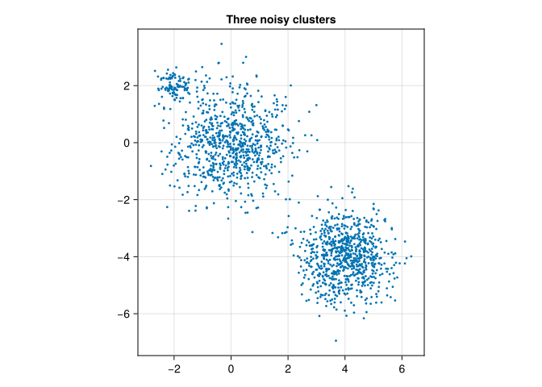
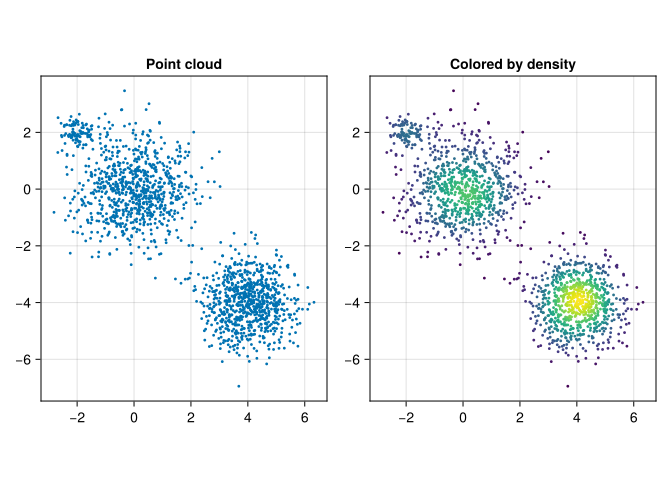
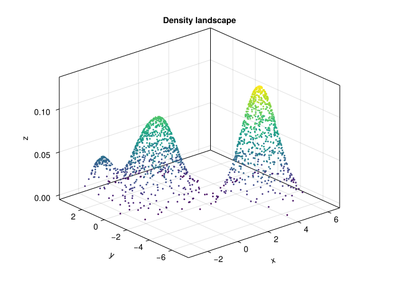
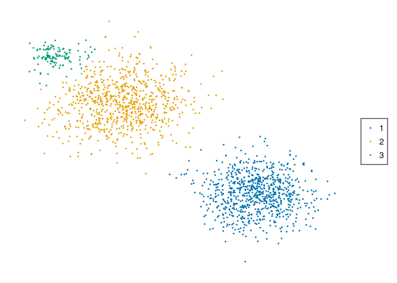
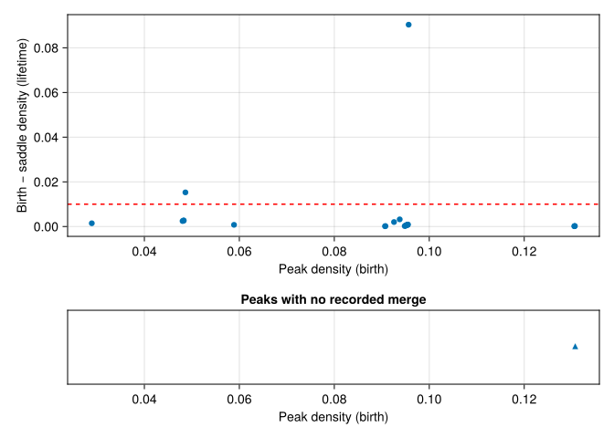
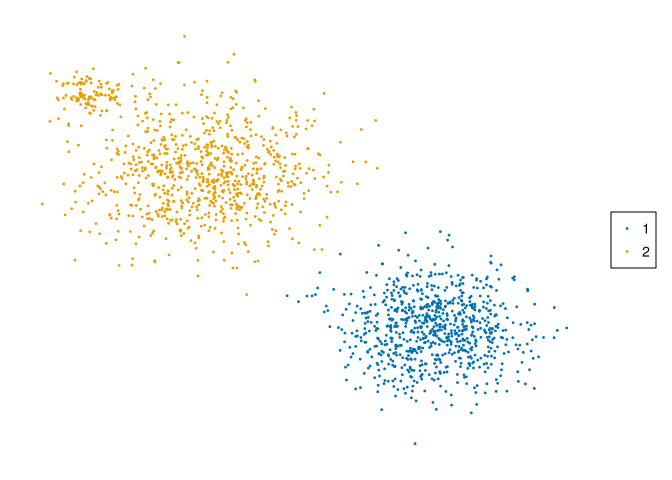

using CairoMakie
using MetricSpaces
using TDAplots
using ToMATo
using Random
using Graphs10 ToMATo
Given a point cloud \(X\), how can topology help us discover clusters?
The ToMATo algorithm combines three ingredients:
- a metric space;
- a density function on that space;
- a proximity graph telling us which points count as neighbors.
Once those ingredients are in place, ToMATo climbs the density landscape, tracks how peaks merge, and uses persistence to decide how much of that landscape to retain (Chazal et al. 2013). A persistent peak has a large height above its connecting saddle in the chosen density and graph; whether it represents a useful cluster is a separate question.
One good way to understand ToMATo is to pretend we are inventing it from scratch. We will start with a toy point cloud, turn it into a landscape, and then ask how to follow that landscape toward stable peaks.
10.1 Setup
10.2 A point cloud with three peaks
We start with a synthetic dataset containing two large clusters and one smaller one:
rng = MersenneTwister(0)
X = EuclideanSpace(
hcat(
randn(rng, 2, 800),
0.8 .* randn(rng, 2, 800) .+ [4.0, -4.0],
0.3 .* randn(rng, 2, 100) .+ [-2.0, 2.0],
),
)
Xmat = as_matrix(X)
fig = Figure()
ax = Axis(fig[1, 1], title = "Three noisy clusters", aspect = DataAspect())
scatter!(ax, Xmat[1, :], Xmat[2, :], markersize = 4)
fig┌ Warning: Found `resolution` in the theme when creating a `Scene`. The `resolution` keyword for `Scene`s and `Figure`s has been deprecated. Use `Figure(; size = ...` or `Scene(; size = ...)` instead, which better reflects that this is a unitless size and not a pixel resolution. The key could also come from `set_theme!` calls or related theming functions. └ @ Makie ~/.julia/packages/Makie/UjJJY/src/scenes.jl:238

We can already guess that there are three dense regions, but ToMATo will make that intuition precise.
10.3 Density
The local JuliaTDA stack provides a kernel density estimator in MetricSpaces.jl:
ds = kde(X, bandwidth = 0.5)
fig = Figure(size = (800, 400))
ax1 = Axis(fig[1, 1], title = "Point cloud", aspect = DataAspect())
scatter!(ax1, Xmat[1, :], Xmat[2, :], markersize = 4)
ax2 = Axis(fig[1, 2], title = "Colored by density", aspect = DataAspect())
scatter!(ax2, Xmat[1, :], Xmat[2, :], color = ds, markersize = 4)
fig┌ Warning: Found `resolution` in the theme when creating a `Scene`. The `resolution` keyword for `Scene`s and `Figure`s has been deprecated. Use `Figure(; size = ...` or `Scene(; size = ...)` instead, which better reflects that this is a unitless size and not a pixel resolution. The key could also come from `set_theme!` calls or related theming functions. └ @ Makie ~/.julia/packages/Makie/UjJJY/src/scenes.jl:238

The corresponding density landscape looks like a collection of mountains:
fig = Figure()
ax = Axis3(fig[1, 1], title = "Density landscape")
scatter!(ax, Xmat[1, :], Xmat[2, :], ds, color = ds, markersize = 4)
fig┌ Warning: Found `resolution` in the theme when creating a `Scene`. The `resolution` keyword for `Scene`s and `Figure`s has been deprecated. Use `Figure(; size = ...` or `Scene(; size = ...)` instead, which better reflects that this is a unitless size and not a pixel resolution. The key could also come from `set_theme!` calls or related theming functions. └ @ Makie ~/.julia/packages/Makie/UjJJY/src/scenes.jl:238

Informally, points near the top of a mountain are local density maxima. Those are the candidate cluster centers.
Conceptually, the density of a point is obtained by averaging a kernel over its distances to all observations, including itself:
\[ \mathrm{dens}(x) = \frac{1}{|X|} \sum_{y \in X} K\!\left(\frac{d(x,y)}{h}\right), \]
where \(h\) is the bandwidth. Larger bandwidths smooth the landscape; smaller ones reveal finer local bumps.
Bandwidth has the same units as distance. Here \(h=0.5\) is half the standard deviation of the first cloud. The default kernel is \(K(t)=\exp(-t^2/2)\); this implementation averages kernel values without the usual volume-normalizing factor, so the result is a density score, not a probability density that integrates to one. Multiplying this score by ten also multiplies every peak lifetime by ten. A value of \(\tau\) makes sense only alongside the estimator and its bandwidth.
10.4 The proximity graph
ToMATo does not work directly with all pairwise distances. Instead, it builds a graph whose vertices are the points of \(X\) and whose edges connect nearby points:
g = proximity_graph(X, 0.5; min_k_ball = 4, max_k_ball = 6, k_nn = 3)
tomato_graph_plot(X, g, ds)┌ Warning: Found `resolution` in the theme when creating a `Scene`. The `resolution` keyword for `Scene`s and `Figure`s has been deprecated. Use `Figure(; size = ...` or `Scene(; size = ...)` instead, which better reflects that this is a unitless size and not a pixel resolution. The key could also come from `set_theme!` calls or related theming functions. └ @ Makie ~/.julia/packages/Makie/UjJJY/src/scenes.jl:238

This graph is built point-by-point:
- first try to connect a point to the points in its \(\epsilon\)-ball;
- if that ball is too small, fall back to a fixed number of nearest neighbors;
- if the ball is too large, cap the number of edges.
For the call above, a radius ball with fewer than four other points triggers the three-nearest-neighbor fallback. The implementation truncates the candidate list to six entries before removing the point itself. It can therefore select five or six other vertices, depending on whether its own ID survived the truncation. Finally, the edges are made undirected: other points can choose it too, so its final degree can exceed six.
There is another implementation detail: radius-query results are sorted by observation ID, not distance. Capping a dense ball keeps the first IDs, so changing the row order can change the graph even when coordinates are unchanged. This is not a closest-six-neighbor rule. Record the ordering and check sensitivity to permutations when this cap is active; the book preserves a fixed order for reproducibility.
We can inspect that effect rather than guessing from the parameter names:
(vertices = nv(g), edges = ne(g), degree_range = extrema(degree(g)),
components = length(connected_components(g)))(vertices = 1700, edges = 9166, degree_range = (3, 143), components = 1)The fallback can connect points farther apart than 0.5. A graph that bridges a genuine gap can make unrelated peaks merge; a graph that disconnects one population can create multiple peaks that never merge. Check both the picture and the connected components before choosing \(\tau\).
At this point we can imagine a mountain-climbing algorithm:
- if a point is already at a local maximum, it should seed a cluster;
- otherwise, it should inherit the cluster of a higher-density neighbor.
That is the core idea behind ToMATo.
10.5 Too many peaks
If we run ToMATo with \(\tau = 0\), then every little bump in the density can survive as its own cluster:
clusters_raw, _ = tomato(X, g, ds, 0.0)
tomato_graph_plot(X, g, float.(clusters_raw))┌ Warning: Found `resolution` in the theme when creating a `Scene`. The `resolution` keyword for `Scene`s and `Figure`s has been deprecated. Use `Figure(; size = ...` or `Scene(; size = ...)` instead, which better reflects that this is a unitless size and not a pixel resolution. The key could also come from `set_theme!` calls or related theming functions. └ @ Makie ~/.julia/packages/Makie/UjJJY/src/scenes.jl:238

This usually over-segments the data. Every tiny bump in the density can survive as its own cluster, even when it is obviously just a wrinkle on the side of a larger mountain.
10.6 What is a peak’s lifetime?
Unlike the distance filtrations we used earlier, density is read from high to low. At level \(a\), retain vertices with \(f(x)\geq a\) and the graph edges joining retained vertices. This is a superlevel filtration.
Imagine a path of five vertices with heights 10, 6, 4, 5, 8. The first peak appears at height 10, and the second at height 8. At height 4, the middle vertex joins their two components. The lower peak dies at that saddle, so its lifetime is \(8-4=4\). The higher peak survives. No mountaineering equipment required.
peak_X = EuclideanSpace(reshape(collect(0.0:4.0), 1, :))
peak_graph = SimpleGraph(5)
for i in 1:4
add_edge!(peak_graph, i, i + 1)
end
peak_density = [10.0, 6.0, 4.0, 5.0, 8.0]
_, peak_pairs = tomato(peak_X, peak_graph, peak_density, Inf)
peak_pairsDict{Int64, Vector{<:Real}} with 2 entries:
5 => [8.0, 4.0]
1 => [10.0, Inf]The pair for vertex 5 is [8.0, 4.0]. The survivor is stored as [10.0, Inf]; Inf here is a sentinel for no observed merge, not a density level above the peak. For finite pairs, birth exceeds death and lifetime is birth minus death. With \(\tau=3\) both peaks remain; with \(\tau=5\) they merge. This implementation uses a strict comparison, so a peak whose lifetime is exactly \(\tau\) remains.
10.6.1 Equal heights need a separate check
A genuine graph superlevel filtration inserts a connected plateau at one height. It should not invent several persistent components simply because its vertices tie.
The frozen ToMATo implementation used in this edition follows only strictly higher neighbors. Equal-density edges are ignored. On a connected constant-density path, it consequently reports three surviving peaks:
flat_X = EuclideanSpace(reshape([0.0, 1.0, 2.0], 1, :))
flat_graph = SimpleGraph(3)
add_edge!(flat_graph, 1, 2)
add_edge!(flat_graph, 2, 3)
flat_labels, flat_pairs = tomato(flat_X, flat_graph, ones(3), 1.0)
println("Reported clusters on a connected plateau: ", length(unique(flat_labels)))
println("Peaks with no recorded merge: ", count(p -> !isfinite(p[2]), values(flat_pairs)))Reported clusters on a connected plateau: 3
Peaks with no recorded merge: 3The mathematical superlevel graph has only one component here. This is a limitation of the implementation’s tie handling, not evidence for three populations. Check equal scores, particularly with duplicates or quantized densities, before interpreting the output. An implementation that handles plateaus must process their connected same-height vertices together, or use a justified tie policy that preserves the filtration. Our five-vertex peak calculation has distinct heights and does not encounter this issue.
10.7 Merging short-lived peaks
ToMATo fixes that by merging peaks whose lifetimes are too short. The parameter \(\tau\) sets the persistence threshold:
τ = 0.01
clusters, _ = tomato(X, g, ds, τ, max_cluster_height = τ)
metricspace_plot(X, color = string.(clusters), markersize = 4)┌ Warning: Found `resolution` in the theme when creating a `Scene`. The `resolution` keyword for `Scene`s and `Figure`s has been deprecated. Use `Figure(; size = ...` or `Scene(; size = ...)` instead, which better reflects that this is a unitless size and not a pixel resolution. The key could also come from `set_theme!` calls or related theming functions. └ @ Makie ~/.julia/packages/Makie/UjJJY/src/scenes.jl:238

Now the seed and parameters above recover three positive cluster labels. We can check the count explicitly:
length(filter(>(0), unique(clusters)))3There are two decisions in this call. \(\tau\) merges a peak when its height above a connecting saddle is too small. max_cluster_height then labels every retained cluster whose absolute peak density is below its threshold as 0. Those points need not form a connected cluster; 0 is a common low-density category. Setting max_cluster_height = 0 disables this extra decision. We set the two thresholds equal for this demonstration, but they answer different questions.
10.8 Choosing \(\tau\)
The usual workflow is to run ToMATo once with \(\tau = \infty\) and inspect the birth-death pairs of the peaks:
_, births_and_deaths = tomato(X, g, ds, Inf)
# Show finite lifetimes honestly, with survivors drawn in a separate strip.
function peak_lifetime_plot(pairs; tau = nothing)
finite = [p for p in values(pairs) if isfinite(p[2])]
survivors = [p[1] for p in values(pairs) if !isfinite(p[2])]
fig = Figure(size = (800, 480))
ax = Axis(fig[1, 1], xlabel = "Peak density (birth)",
ylabel = "Birth − saddle density (lifetime)")
if !isempty(finite)
scatter!(ax, first.(finite), [p[1] - p[2] for p in finite])
end
if !isnothing(tau)
hlines!(ax, [tau], color = :red, linestyle = :dash)
end
ax_surviving = Axis(fig[2, 1], xlabel = "Peak density (birth)",
title = "Peaks with no recorded merge")
scatter!(ax_surviving, survivors, zeros(length(survivors)), marker = :utriangle)
hideydecorations!(ax_surviving)
lo, hi = extrema([p[1] for p in values(pairs)])
padding = max((hi - lo) * 0.05, 0.001)
xlims!(ax, lo - padding, hi + padding)
xlims!(ax_surviving, lo - padding, hi + padding)
rowsize!(fig.layout, 2, Relative(0.25))
fig
end
peak_lifetime_plot(births_and_deaths, tau = 0.01)┌ Warning: Found `resolution` in the theme when creating a `Scene`. The `resolution` keyword for `Scene`s and `Figure`s has been deprecated. Use `Figure(; size = ...` or `Scene(; size = ...)` instead, which better reflects that this is a unitless size and not a pixel resolution. The key could also come from `set_theme!` calls or related theming functions. └ @ Makie ~/.julia/packages/Makie/UjJJY/src/scenes.jl:238

The horizontal coordinate is birth density, and the vertical coordinate is lifetime, not death density. Finite points above the red line survive this persistence threshold; points below it merge. Triangles in the bottom strip represent the peaks that never merge in the graph, so we do not assign them an invented finite lifetime. A disconnected graph can have several such survivors.
If we increase \(\tau\) further, the small cluster eventually merges into one of the large ones:
τ = 0.04
clusters_merged, _ = tomato(X, g, ds, τ, max_cluster_height = τ)
metricspace_plot(X, color = string.(clusters_merged), markersize = 4)┌ Warning: Found `resolution` in the theme when creating a `Scene`. The `resolution` keyword for `Scene`s and `Figure`s has been deprecated. Use `Figure(; size = ...` or `Scene(; size = ...)` instead, which better reflects that this is a unitless size and not a pixel resolution. The key could also come from `set_theme!` calls or related theming functions. └ @ Makie ~/.julia/packages/Makie/UjJJY/src/scenes.jl:238

length(filter(>(0), unique(clusters_merged)))2The count is now two. Here both thresholds were raised, so compare with max_cluster_height = 0.01 to isolate the effect of persistence merging. There is no universal value of \(\tau\). Inspect the lifetime plot, vary bandwidth and graph radius, and decide what counts as a cluster in your application. Persistence supplies a diagnostic, not a certificate of statistical significance.
10.9 The original algorithm
Here is the original schematic description from (Chazal et al. 2013):

10.10 Summing up
ToMATo needs:
- a metric space \(X\);
- a density function \(f\) on \(X\);
- a proximity graph \(g\) on \(X\);
- a persistence threshold \(\tau\).
Different choices of density and neighborhood graph lead to different clustering behavior. In this chapter we used a kernel density estimator and a mixed \(\epsilon\)-ball / k-nearest-neighbor graph, but other combinations are possible.
The three scales are worth keeping separate: bandwidth shapes the landscape, the graph controls possible paths through it, and \(\tau\) merges peaks along those paths.
10.11 Try it yourself
- In the five-vertex path, replace the density vector by
[10, 7.5, 7, 7.5, 8]. What is the lower peak’s lifetime now? Does \(\tau=3\) merge it?
NoteWorked answer
The saddle is now 7 and the lifetime is \(8-7=1\). Since \(1<3\), it merges. A saddle depends on the lowest height of the whole connecting path; changing only the middle vertex would not give this answer if an adjacent vertex remained lower.
- A peak has height 0.02 and saddle height 0.001. What happens with \(\tau=0.01\) and
max_cluster_height=0.025?
NoteWorked answer
Its lifetime is 0.019, so it survives persistence merging. Its absolute height is below 0.025, so its cluster receives label 0. A low peak can have a long lifetime.
- Multiply every density by ten. Which parameter changes preserve the clustering?
NoteWorked answer
Multiply both \(\tau\) and max_cluster_height by ten, while keeping the graph fixed. Density order is unchanged and both comparisons scale equally. Changing bandwidth is different: it may change the order and number of peaks.